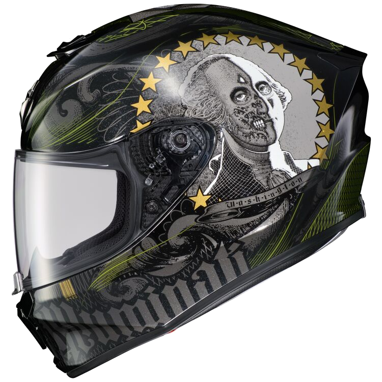

Scorpion EXO-R420 Illuminati 2 sisak
A Scorpion EXO-R420 nem valami félig sült verseny ihletésű sisak. Ez az igazi, a fejlett LG polikarbonát héjjal, amelyet az SNELL jóváhagyott. Az Ellip-Tec 2 arcvédő szorosan összehúzza a pajzsot, így az EXO-R420 aerodinamikus. Az arcpárnák vészkioldó rendszerrel rendelkeznek, és szükség esetén moshatók. Vidd a Scorpion EXO-R420-at a pályára vagy a kanyargós helyekre.